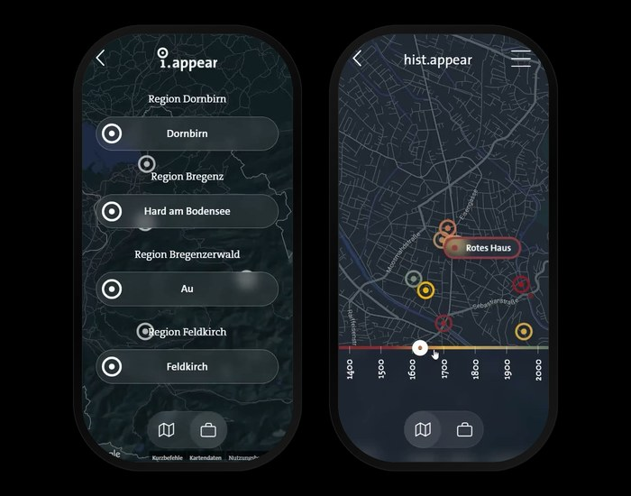

Ein digitaler Stadtrundgang ist eine ortsbezogene Web-Erfahrung, die eine Stadt oder Gemeinde an festen Stationen erzählerisch erschliesst. Karte, Geschichte und Ort kommen in einer Webseite zusammen, die im Browser läuft – ohne Download, ohne Account, ohne App. An jeder Station öffnen sich Audio, Text, Bilder und – je nach Konzept – auch 3D-Modelle oder Augmented Reality.
Für Gemeinden, Tourismusverbände und Kulturinstitutionen ist das Format ein nüchternes Werkzeug: Eine Stadt erzählt von sich selbst, ohne dass jemand führen oder zur festgesetzten Zeit erscheinen muss. Die spannendere Frage ist deshalb nicht, was ein digitaler Stadtrundgang technisch kann – sondern: Was unterscheidet einen guten von einem mittelmässigen?
Dieser Leitfaden beantwortet beide Fragen. Er stützt sich auf die Praxis von i.appear, einer Vorarlberger Plattform mit aktuell 10 Rundgängen, 80 Stationen in 4 Regionen.
Definition: Was ein digitaler Stadtrundgang ist – und was nicht
Drei Abgrenzungen machen klar, womit es zu tun ist:
Kein klassischer Audioguide. Ein digitaler Stadtrundgang funktioniert nicht nur akustisch. Audio bleibt wichtig, aber alle Inhalte können auch gelesen oder angesehen werden. Das macht den Rundgang zugänglich – in lauter Umgebung, in Gruppen, für Menschen mit Höreinschränkungen.
Keine App. Ein moderner Rundgang läuft als WebApp im Browser. Kein App-Store, keine Installation, keine Berechtigungen, kein Speicherplatz. Wer den Link öffnet, ist im Rundgang. Wer das Smartphone weglegt, hat nichts darauf zurückgelassen.
Kein digitalisierter Faltplan. Eine PDF mit Klickpunkten ist kein digitaler Stadtrundgang. Was den Unterschied macht, ist die Verschränkung von Karte, Erzählung und Ort: Inhalte, die sich am Standort öffnen, in der gewählten Sprache, in der Reihenfolge, die der Besucher selbst bestimmt.
Der Wechsel von gedrucktem Material zu webbasierten Erlebnissen hat etwa 15 Jahre gedauert. Frühe Versuche waren App-fixiert und mühsam zu installieren. Erst die heutige Generation von WebApps löst ein, was vom Anfang an versprochen war: ortsbezogene Geschichte ohne Reibung an der Technik.
Wofür Gemeinden einen digitalen Stadtrundgang einsetzen
In der Praxis decken digitale Stadtrundgänge drei sehr unterschiedliche Bedürfnisse ab. Es lohnt sich, sie auseinanderzuhalten – die Designentscheidungen sind in jedem Fall andere.
Tourismus und regionale Identität
Tourist:innen kommen oft zu Zeiten, in denen klassische Gästeführungen nicht stattfinden – am Wochenende, am Sonntagvormittag, im November. Ein digitaler Rundgang ist immer da, in der Sprache, die die Gäste mitbringen, ohne Voranmeldung. Für Gemeinden ist er eine Form von „passiver Gastfreundschaft“: Wer will, findet etwas. Wer nicht will, wird nicht angesprochen.
Bei i.appear deckt diese Schicht die Kategorie i.dentity ab. Beispiele:
- Innenstadt erleben und Oberdorf entdecken in Dornbirn (jeweils elf Stationen)
- Augmented-Reality-Rundgang im Messepark mit dem sprechenden Baum – einer Kindheitserinnerung, die als 3D-Modell zurückgekehrt ist
Stadtgeschichte und Kulturvermittlung
Stadtgeschichte ist meistens an Orten passiert, die heute noch da sind – aber sie sehen anders aus. Ein digitaler Rundgang macht diese Differenz sichtbar: historische Fotografien, archivalische Quellen, Audio-Erzählungen am Originalschauplatz. Hier wird die Qualität der Vermittlung zur entscheidenden Frage.
Bei i.appear läuft diese Schicht unter i.history. Sechs Beispiele aus der Praxis stehen weiter unten in diesem Beitrag.
Bildung
Schul-Rundgänge sind ein eigener Anwendungsbereich, in dem Schüler:innen selbst zu Autor:innen werden. Diese Schicht – bei i.appear unter i.grow – ist ein eigenes Thema und im Beitrag zum neuen Pflichtfach Medien und Demokratie ausführlich behandelt.
Praxisbeispiele: Digitale Stadtrundgänge in Vorarlberg
Folgende Rundgänge zeigen die Bandbreite des Formats – im selben technischen Rahmen, aber mit sehr unterschiedlichen Erzählweisen, Quellen und Zielgruppen.
Stadtspuren – Industriegeschichte entlang der Dornbirner Ach
18 Stationen entlang der Dornbirner Ach, inhaltlich erarbeitet vom Stadtarchiv Dornbirn (Werner Matt, Klaus Fessler), illustriert von Nikolay Uzunov, gestaltet von Sägenvier. Ein begleitendes Buch ist im Stadtarchiv erhältlich. Auf dem Spaziergang sind die Stationen zusätzlich physisch verankert – durch Sitzgelegenheiten und Tafeln.
Hist.appear – 600 Jahre Dornbirner Geschichte
Der erste Rundgang der Plattform. Inhaltlich basiert er auf einer Lehramts-Masterarbeit an der Universität Wien, gefördert vom Bundesministerium für Kunst, Kultur, öffentlichen Dienst und Sport, in Zusammenarbeit mit der Dornbirner Geschichtswerkstatt.
Barockbaumeister – Franz Beer erzählt selbst
In Au im Bregenzerwald lässt der Rundgang Franz Beer als historische Figur sprechen – aus dem 18. Jahrhundert, von seiner Lehrzeit, seinen Reisen, seinen Bauten am Bodensee. Der Rundgang ist Teil des Forschungsprojekts Digital In&Out mit dem vorarlberg museum, der Universität Konstanz, dem Barockbaumeister Museum Au und der FH Vorarlberg.
See Runde – Sozialgeschichte in Hard am Bodensee
Der Rundgang folgt dem Strassenkehrer Fiffi, einer realen Harder Person, durch die Sozialgeschichte des Ortes – Armenhaus, Geburtenstation, Sezierhaus. Keine touristische Glättung, sondern Alltag und Verletzlichkeit, an konkreten Häusern erzählt.
Frauenspuren – Dornbirn (Mai 2026)
300 Jahre Frauengeschichte, sichtbar gemacht an den Häusern, vor denen die Stationen stehen: Erfinderin, Marktfrau, erste Ärztin Vorarlbergs, Sozialdemokratin, NS-Täterin. Inhaltlich basiert der Rundgang auf dem Buch Frauenspuren von Roswitha Fessler aus der Reihe Dornbirner Schriften. Illustriert von Lisa Althaus, Audio auf Deutsch und Englisch.
125 Jahre – 125 Bilder (2026)
Erscheint zum 125-jährigen Stadterhebungsjubiläum von Dornbirn. 125 Bilder, über das Stadtgebiet verteilt, erzählen Alltag und Wandel der letzten 125 Jahre.
Was diese Rundgänge verbindet, ist nicht die Technologie – sondern Quellen, Sorgfalt und ein konkreter Ort.
Was einen guten digitalen Stadtrundgang ausmacht
Im DACH-Raum sind in den letzten Jahren zahlreiche digitale Stadtrundgänge entstanden – einige hervorragend, andere oberflächlich. Aus der Praxis lassen sich vier Qualitätskriterien ableiten.
1. Inhaltliche Fundierung
Wer Geschichte erzählt, braucht Quellen. Archivarbeit, Zeitzeug:inneninterviews, Kooperationen mit Historiker:innen oder Kulturhäusern sind keine Luxusoptionen, sondern die Mindestvoraussetzung dafür, dass ein Rundgang nicht falsche oder gleichgültig recherchierte Inhalte verbreitet.
Faustregel: Wenn Sie nicht angeben können, woher eine Behauptung stammt, gehört sie nicht in den Rundgang.
2. Erzählerische Qualität
Ein Lexikoneintrag macht aus 600 Jahren Stadtgeschichte einen Friedhof. Eine Geschichte macht daraus einen Spaziergang. Der Unterschied liegt in der Dramaturgie: Wer ist die Hauptfigur dieser Station, und warum sollte ich mich für sie interessieren?
Bei einer typischen Station hat sich eine Länge von 400 bis 800 Wörtern im Text und 2 bis 4 Minuten im Audio bewährt. Kürzer wirkt abgehackt, länger wird im Gehen nicht zu Ende geschaut.
3. Designhandwerk
Eine schlecht gestaltete Station signalisiert: Hier ist es egal. Klare Typografie, lesbare Kontraste, durchdachte Bildauswahl, ruhige Interaktionen – das sind keine Verzierungen, sondern Vermittler. Ein Rundgang, der gestalterisch ernstgenommen wurde, wird auch inhaltlich ernster genommen.
4. Zugänglichkeit
Mobile First, kurze Ladezeiten auch bei mittelmässigem Empfang, gute Kontraste, klare Sprache, Mehrsprachigkeit. Das ist kein Bonusprogramm. Wenn ein Drittel der Besucher:innen aus Zeitgründen oder wegen technischer Hürden nicht zur ersten Station kommt, ist der Rundgang misslungen.
Datenschutz: Privacy by Design statt Tracking
Bei einem digitalen Stadtrundgang gehen Menschen mit ihrem Smartphone durch den öffentlichen Raum. Das Gerät kennt ihren Standort, ihre Bewegungsmuster, oft auch viel mehr. Wer ein Werkzeug entwickelt, das auf diesem Gerät läuft, trifft eine Entscheidung darüber, was er mit diesen Daten tut.
i.appear hat sich für Privacy by Design entschieden:
- Keine App-Installation, keine Berechtigungen auf dem Gerät
- Keine Registrierung, keine E-Mail-Adresse, kein Account
- Keine Datenerhebung über Nutzungsverhalten, keine Standort-Logs, keine Analytics-Tracker
- Keine Werbung
- DSGVO-konform, ohne dass Endnutzer:innen sich darum kümmern müssen
Diese Entscheidung hat eine technische Konsequenz: Es ist nicht in einem Dashboard nachverfolgbar, wie viele Personen welche Station besucht haben. An deren Stelle tritt das, was im Stadtraum sowieso schon funktioniert – Rückmeldung von Gemeinden, Schulen, Tourist:innen, Lehrkräften. Qualitätssicherung über Beziehung statt über Tracking.
Für Gemeinden und Kulturinstitutionen, die mit öffentlichen Geldern arbeiten und sich auf DSGVO-konforme Lösungen festlegen müssen, vereinfacht das die rechtliche Lage erheblich.
Wie ein digitaler Stadtrundgang entsteht: Der Workflow
Ein digitaler Stadtrundgang ist kein Schnellschuss. Wer ein gutes Ergebnis möchte, plant typischerweise mehrere Monate ein – Recherche, Texte, Audio-Aufnahmen, Bildrechte, Test, Iteration. Wer sich für einen guten Rundgang entscheidet, entscheidet sich gegen einen schnellen.
Der Workflow läuft in drei Phasen:
1. Auftakt – Ein Gespräch über die Idee, den Ort, die Zielgruppe. Eine Gemeinde kann einen fertigen Plan mitbringen oder gemeinsam mit i.appear einen entwickeln.
2. Konzept – Inhaltliche Linie, Stationen, Medienformate (Audio, Bild, 3D, AR), Zeitplan, Kosten. Hier wird auch geklärt, welche Partner:innen einbezogen werden – Stadtarchiv, Museum, Tourismusverband, Schulen.
3. Umsetzung – Recherche, Produktion, Testing, Veröffentlichung. Begleitend wird mit den Beteiligten gearbeitet, sodass der Rundgang nach der Veröffentlichung weitergepflegt werden kann.
Die genauen Leistungspakete sind auf der Workflow-Seite von i.appear dokumentiert.
Häufig gestellte Fragen
Brauchen Besucher:innen eine App, um an einem digitalen Stadtrundgang teilzunehmen?
Nein. Ein moderner digitaler Stadtrundgang läuft als WebApp im Browser. Es gibt nichts zu installieren und keine Berechtigungen, die freigegeben werden müssen.
Wie lange dauert es, einen digitalen Stadtrundgang zu erstellen?
Mehrere Monate. Recherche, Texte, Audio-Aufnahmen, Bildrechte, Tests und Iterationen brauchen Zeit. Wer ein gutes Ergebnis möchte, plant das ein.
Was passiert mit den Standortdaten der Besucher:innen?
Bei i.appear nichts. Die Plattform arbeitet nach Privacy by Design: keine Registrierung, keine Datenerhebung, keine Analytics, keine Werbung. DSGVO-konform ohne Aufwand für Endnutzer:innen.
Können bestehende Inhalte – Stadtarchiv, Buch, Forschung – in einen Rundgang einfliessen?
Ja. Mehrere i.appear-Rundgänge sind aus solchen Kooperationen entstanden – etwa Stadtspuren mit dem Stadtarchiv Dornbirn (begleitendes Buch) oder Barockbaumeister im Forschungsprojekt Digital In&Out mit dem vorarlberg museum, der Universität Konstanz und der FH Vorarlberg.
Schluss: Eine zweite Schicht über der Stadt
Ein guter digitaler Stadtrundgang nimmt der bestehenden Stadtgeschichte nichts weg – im Gegenteil. Er macht sie an mehr Stellen sichtbar, für mehr Menschen, in mehr Sprachen, zu mehr Zeiten. Er ersetzt keine Stadtführerin, aber er ergänzt sie um eine Form, die immer da ist, wenn jemand sie braucht.
Ein schlechter digitaler Stadtrundgang dagegen ist Lärm: Er sieht aus wie Vermittlung, ist aber nur ein Werbekanal mit Standortbezug. Der Unterschied liegt nicht in der Technologie, sondern in der Sorgfalt der Inhalte und der Klarheit der Designentscheidungen.
Wer in der eigenen Gemeinde, im eigenen Museum oder am eigenen Tourismusstandort über einen digitalen Stadtrundgang nachdenkt – die ehrlichste erste Frage ist nicht „Was kostet das?“, sondern: „Was wollen wir eigentlich erzählen, und woher wissen wir, dass es stimmt?“ Wer auf diese Frage eine gute Antwort hat, hat den schwierigsten Teil hinter sich.
→ Übersicht aller i.appear-Stadtrundgänge
→ Workflow & Leistungen
→ Vitrine: Auszeichnungen und Forschungsprojekte